Learn crypto from the people who use it.
The whole conversation, with its transcript
Not a course. These are people on their own streets explaining what they know, in their own words, and you can search every word of it.
Read it in any order. If one word stops you, the glossary has sixteen of them in plain language. If one piece is not enough, the question What is Ethereum? was put to people in several cities and their answers sit side by side.
These are the speakers’ own words, as they said them. We have not checked their claims, and nothing here is financial advice.
Start with the question.
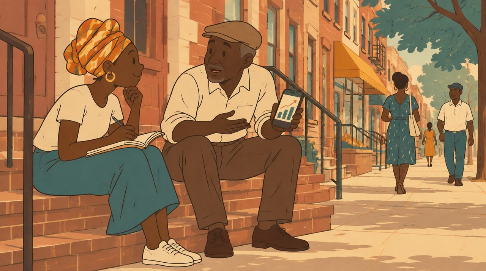
What is it, in plain words, from people who were asked cold.
-

Kafani asks UNILAG students what Ethereum is and then actually teaches it: create a wallet, never share your seed phrase, you can start with a dollar, and she onboards one student live and sends him ETH.
-
Hashdrowned, a New York songwriter, explains how the on-chain music platform Nina worked ('Bandcamp on chain, like busking'), why she thinks it ran out of money, how a crypto wallet acts as the artist's account, and...
-
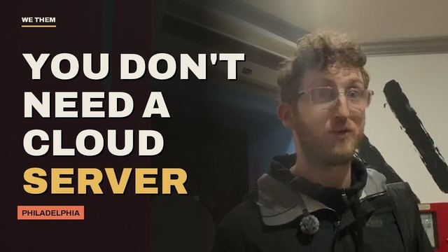
John walks through the specs of a tiny Android phone he uses to make browsing less addictive, then explains the peer-to-peer browser plugin he wrote and the difference between a relay server and a cloud server.
-

A Kenyan dancer who came into crypto through content rather than trading explains how he ended up as a brand mascot, and makes the case for other creators to follow.
-

A Kenyan founder explains how blockchain financing reaches coffee farmers, and how somebody who drinks coffee becomes somebody who invests in growing it.
-

The organiser of a Nairobi creator event explains the gap she built it to close: Africa has plenty of influencers in fintech and fashion and almost none in crypto.
-
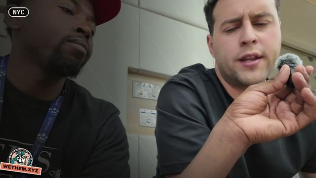
An Argentine at ETHConf in New York is working to get more people across Latin America, governments and schools above all, to learn and understand blockchain.
-
Two brothers from Texas say the world's biggest problem is people minding others' business and division, that Southern hospitality can mask non-acceptance and racism, and one recounts being harassed at a YMCA for...
What it is for.
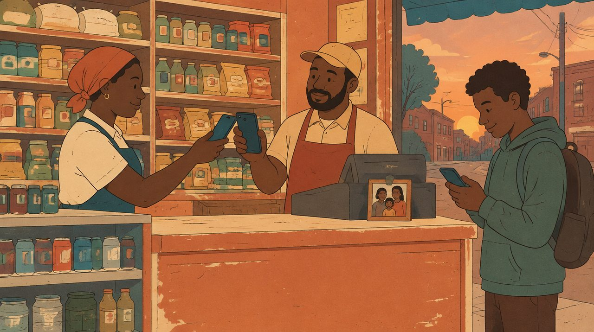
Inflation, remittances, savings, and a bank account that is not a bank.
-
A builder walks through currency debasement versus inflation, uses the 2022 rate-hike period as counter-evidence, and explains decentralized oracles and supply-demand effects of L2s, so a listener could repeat the...
-
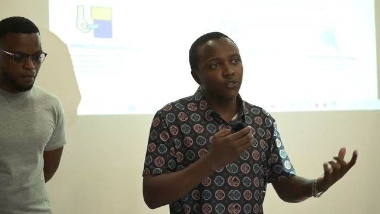
A hackathon pitch for Hakiba explains how staking last month's crypto salary could cover this month's rent, cites sub-Saharan underbanked figures, and lays out the build plan including a smart contract and an AI...
-

Daniel works the arithmetic of $200,000 in cash being worth $160,000 after inflation, explains hedging by saving and staking stablecoins, and describes the prize money and scholarships he wants to fund for students...
-

A near-hour live preview class where Maceo teaches beginners (including his own mother) dedollarization, how Federal Reserve printing erodes wages, why Bitcoin's 21 million cap matters, what a DAO and a wallet are,...
-
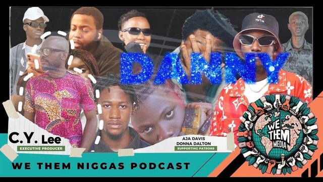
Daniel in Gwagwalada explains why Nigerians cannot hold a 'crypto' event openly while Kenya welcomes it, how Naira inflation eats his weekly savings, why he lost money when Coinbase left, and what he wants blockchain...
-

Maceo explains his plan to shoot 100 unedited interviews before leaving Denver, then a Colorado couple explain the divide between urban Denver and the rural rest of the state, the water shortage, and whether the...
-
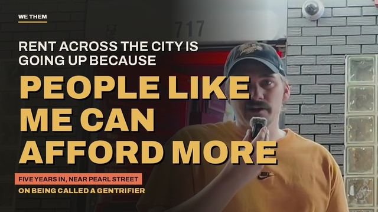
Chase and James outside an arcade on Colfax on whether the internet helps find truth, why online discourse is about scoring points, homelessness and gentrification in Denver, whether they are gentrifiers, AI's cost,...
-
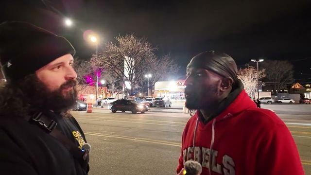
A man visiting from Las Vegas talks about AI, Trump and the economy, and Maceo explains in plain terms why Bitcoin and stablecoins let you hold and send money without a bank or government freezing it.
How it gets built.
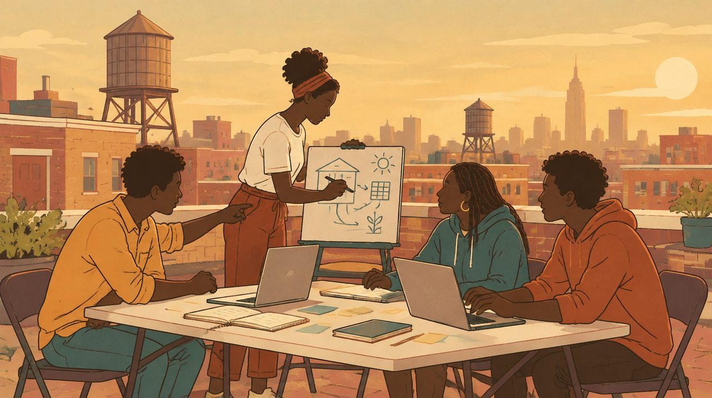
Developers, hackathons, DAOs and the people who write the contracts.
-

The lead author of ERC-721 explains NFTs as the link between crypto and commercial things, why Argentines prefer Bitcoin to a peso that only falls, what a public good is, and his 'moon dust' idea of bringing crypto's...
-

Maggie of Unlink gives a beginner-level explainer on what crypto is, what ETH is, what composability means for Ethereum builders, and how cross-border remittances avoid a thousand-dollar fee on five thousand dollars,...
-
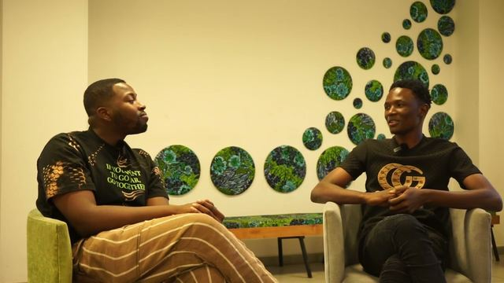
A Kenyan developer at a Nairobi hackathon explains the digital-ID app he is building for refugees and undocumented people who cannot access loans, alongside long if sometimes garbled explanations of blockchain,...
-

Carlos from Cape Verde explains what a social token is, how Seed Club and Forefront came out of early experiments with them, why creators should own their audience graph, and his plan for an ETH Cape Verde conference.
-

Tomás, 27, from Argentina explains his shared liquidity pool design and just-in-time liquidity injection, and ties his interest in stablecoins to years of Argentine currency collapse; a single "hell yeah" is the only...
-

A Web3 Bridge graduate from Anambra State describes the cohort (late nights, mentors, community) and the app his team is building, Billoq, which lets Nigerians pay utility bills directly in crypto instead of...
-
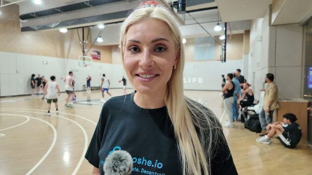
An Estonian builder explains her country's early government-run private blockchain, e-voting, e-residency and zero corporate tax, then defines Ethereum and Bitcoin against each other and pitches the Logos stack and...
-
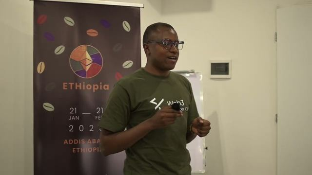
An Ethiopian founder gives a clear structured pitch, naming the five roles in his proposed community, what the AI agents would do and how the per-idea token would give investors equity, which is a real walk-through...
What people make with it.
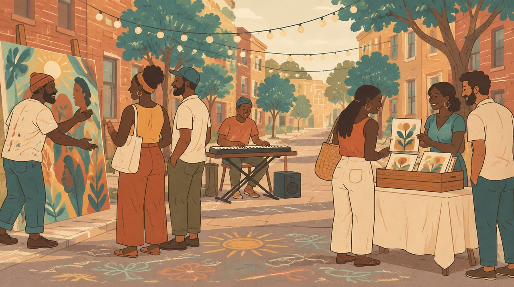
Art, music, community tokens and a pizza party that went around the world.
-

Kafani walks around Lagos asking students about Bitcoin Pizza Day, community and what they would do with 10,000 BTC, patiently re-explaining the 2010 pizza purchase and that you do not need money to join the crypto...
-

John, a painter in Ibadan, shows a work in progress and explains what Bitcoin Pizza Day commemorates, then tells how a crypto friend bought him his first ever pizza.
-
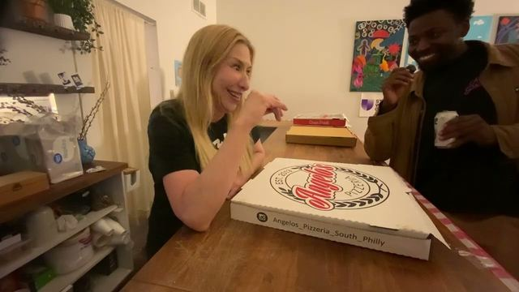
Saucy Saucier tells how Pizza DAO started: a week off work on Clubhouse in early 2021, an art room where Snacks dreamed up selling NFTs to buy pizza, and the launch party in New York on Bitcoin Pizza Day.
-
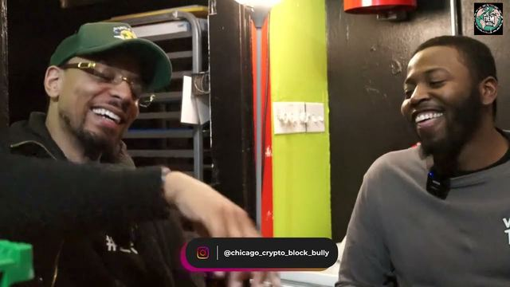
Vince from Denver explains how the Cyber Panther Party NFT began as a fund to bail out a friend held 18 months without trial, became an on-chain bail fund for people arrested doing civil disobedience, and now...
-
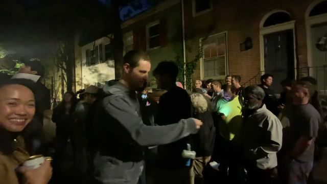
Bitcoin Pizza Day in Philadelphia: a group photo with trivia prizes, banter about whether Bitcoin now belongs to Wall Street, and Snacks explaining what it takes to run PizzaDAO's global pizza party, which he says is...
-
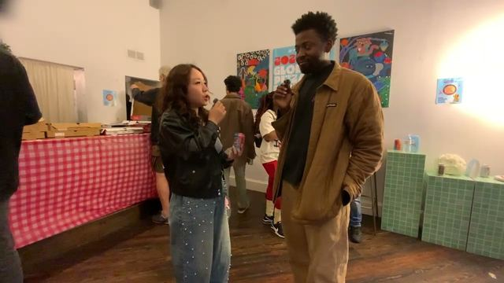
Scarlett, from China and living in Philadelphia, explains why decentralization feels like real free trade to her, what an NFT is and what it can be used for beyond art, and questions why a basketball arena needs to...
-

Kevin, a DJ, explains the feedback loop trick he uses at set end and why he pays for Callaghan's Patreon; Maceo explains how the bounty works, minting a near-free NFT, and how he made about 8K from airdrops in college.
-

Sirsu tells his whole path: Bitcoin in 2011, tokenomics at a New York startup, buying artists' first NFTs to prove it works, the Twitch walkout that led to BLVKHVND, the Crypto Cookout that raised about 1.5 million,...
What can go wrong.
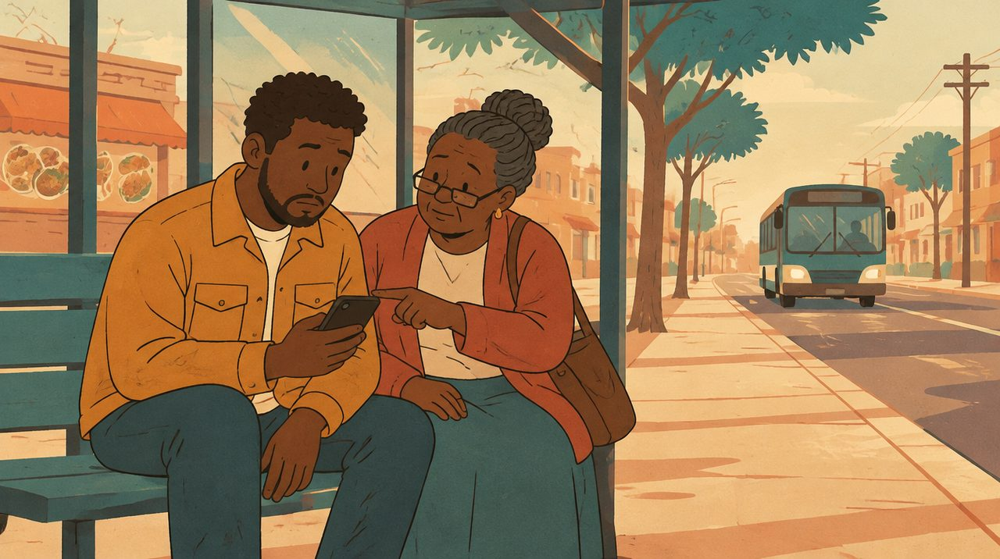
Scams, hacks, lost keys and the regulators.
-

Daniel explains how he onboards Nigerian youth on WhatsApp to show that internet fraud is not the only way to earn, and that with only a phone you can learn blockchain, digital marketing and remote work for Web3 brands.
-
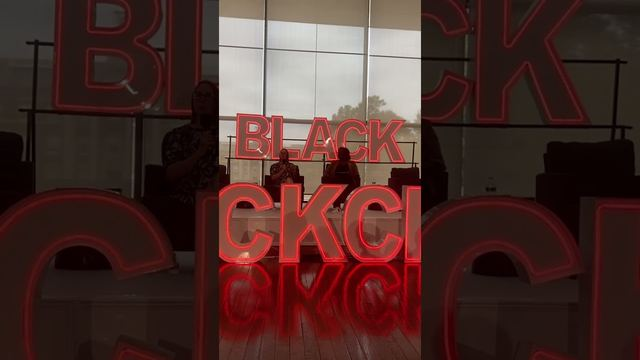
SEC Commissioner Hester Peirce explains the agency's crypto agenda: where the security/non-security line sits, what the SEC has said it does not regulate, her safe-harbor proposal for token launches, tokenized...
-

Bobby, 59, from North Philadelphia, links social media anxiety to youth suicide, then explains his view of the 1 percent, Occupy Wall Street, how division keeps people distracted, and why the school system was never...
-
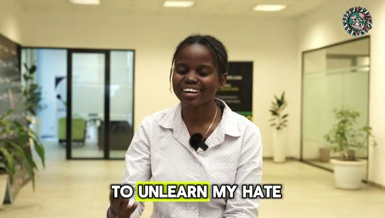
Gloria, at a pop-up city in Ethiopia, explains what a pop-up city is and how she went from believing Bitcoin was a pyramid scheme to seeing Web3 as a tool for women's sports tech.
-
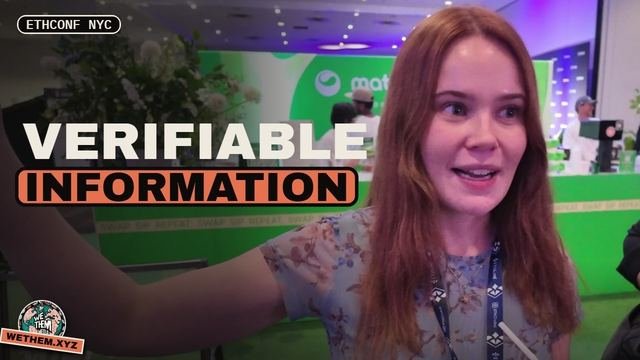
At ETHConf in Manhattan, June 2026, Maceo meets Cat McGee of the Solana Foundation, from Ireland and living in Buenos Aires, and Juanpi, who does AI consulting for Latin American companies.
-

At ETHConf in Manhattan, June 2026, an Ethereum builder of several years tells Maceo he came "to feel out the ecosystem and see what folks are building." Asked what a degen is, he says "Degen is like
Crypto Clarity.
Maceo’s own sessions, one lesson at a time, in order.
-
A lesson from the series, recorded live.
-

A lesson from the series, recorded live.
-

A lesson from the series, recorded live.
The words.
Every term the conversations lean on, defined in plain language, with the moment somebody on tape explains it: the glossary